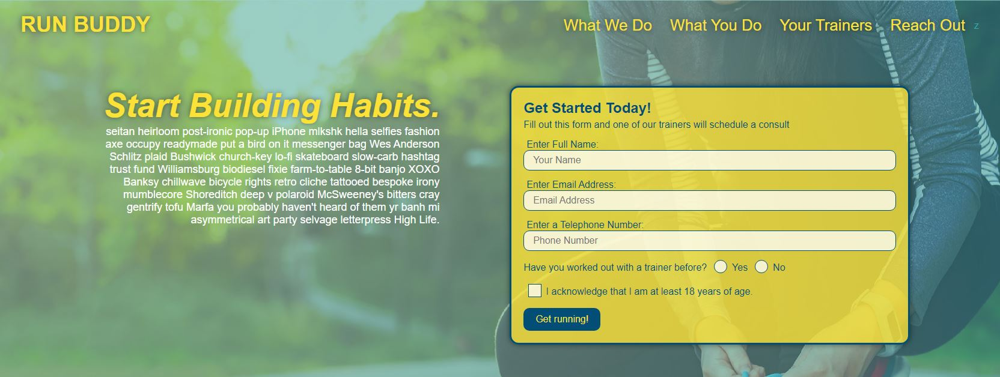

Run Buddy
My Work:

Hi there! I am not your average nerd. I am the type of person who is just as ecstatic spending hours in front of my machine as I am going to the skatepark. I love basically anything outdoors. Let the sun shine on my skin and fill my heart with warmth. I would call myself an adrenaline junkie, but I feel that as I grow older that doesn't reign as true. Don't think that won't stop me from jumping off a cliff into a lake, throwing myself down some stairs at the skatepark, or trying the cool new hip invention my 8 year old daughter finds at school. I love music, everything about it. I mostly listen to hardcore/punk, but there isn't anything I wont play on my spotify playlists. I can play many instruments, but I gravitate to the guitar.
I spent my pre-teens shredding the parks by day and staying up way too late creating the coolest designs for my MySpace profile by night. That's really where my love for coding and computer sciences took off. You see, I was born in the early 90's, and wasn't that a crazy time to be born. I've seen the populus transition from landlines, to flip phones, to smartphones, to portable PCs. I've watched as we went from a society that didn't have technology in the average home to having it become a necessity. I've had the incredible opportunity to sit back and watch as computer sciences expand and create. The world we live in is a fast paced environment and I believe technology only fuels that fire. I love being a factor that contributes to progress.